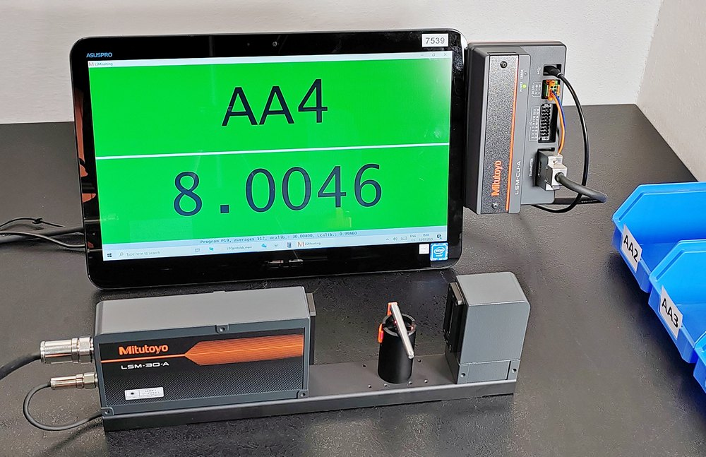
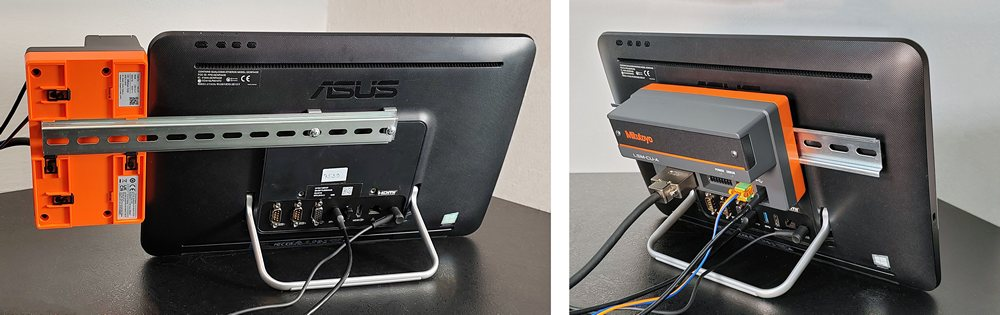

Příklad realizace jednoduché aplikace s LSM u zákazníka
Ve zde uvedeném případu je LSM použit pro třídění válcových dílů do skupin podle průměrů, toleranční pole skupiny je dle dílu kolem 2 µm. Zakládání dílů je ruční. Podstatné je, aby systém přímo zobrazil danou třídící skupinu dle tabulky jednotlivých úrovní dodané jako csv soubor.
Základním problémem k řešení je, že samotná sestava LSM neobsahuje žádný displej nebo zobrazovací jednotku. Protože samotné získávání údajů z přístroje je celkem jednoduché, viz předchozí článek, bylo rozhodnuto, že jako zobrazovací jednotka bude použit nějaký kompaktní počítač, který bude zároveň zajišťovat komunikaci s jednotkou. Jako vhodný a cenově přiměřený se jevil All-in-One ASUS Expert Center E1 s 15,6' dotykovým displejem, který tak zároveň umožní základní ovládání bez klávesnice a myši.
Je škoda, že kvůli jinému řešení USB komunikace LSM jednotky není možné v tomto případě použít počítač s Linuxem, jako jsme to udělali v případě prototypu s lineárním snímačem a EJ counterem.
Hotová sestava veškerého hardware včetně funkčního software může vypadat třeba takto. Díky malým rozměrům vyhodnocovací jednotky jsme se snažili vytvořit co nejkompaktnější celek usnadňující manipulaci, skladování atd. Na snímku nejsou vidět externí napájecí adaptéry pro počítač (zásuvkový typ) a LSM (externí uzavřený typ, obdobný jako např. napaječe notebooků).

Možnost montáže vyhodnocovací jednotky LSM na DIN lištu se jeví jako velmi užitečná i v případech, kdy se nejedná o typickou montáž do rozvaděče. Toho jsme využili i my, když jsme DIL lištu připevnili na existující závitové otvory počítače pro VESA držák a na ni nacvakli danou jednotku. Nabízí se přitom dvě možnosti upevnění: čelem dopředu a vzadu.

Možnosti upevnění vyhodnocovací jednotky na DIN lištu na počítači. Poloha čelem dopředu umožňuje vidět stavové LED jednotky, které mohou signalizovat i chybový stav. Poloha vzadu je prostorově úspornější, zároveň umožnuje skrýt kabeláž jednotky.
POZNÁMKA: na DIN liště chybí mechanické dorazy příp. další příslušenství. Uvedené obrázky zde slouží pouze pro inspiraci a zobrazení možného uspořádání.
Software
Software pro aplikaci z úvodního obrázku vychází z principů popsaných v předchozím článku a je napsaný v Pythonu. Zdrojový kód i kompletní aplikace jednoduše spustitelná na PC (bez instalace) je přiložena ke stažení.
Důvody, proč byl pro aplikaci vybrán Python, jsou celkem obšírné a nemá cenu je zde detailně rozebírat. Preferované výhody jsou zejména tyto:
- dostupnost Pythonu a jeho široká podpora
- názornost kódu a snadné ladění programu v prostředí interpretovaného jazyka
- kompatibilita s Linux systémy a z toho vyplývající možnost chodu na malých SBC
Informace pro použití
Uvedený software je prototyp. Jedná se nejjednodušší funkční aplikaci postavenou na dříve dokumentovaných základech. Je to tak proto, aby umožnila studium a další modifikaci kódu. Z uvedeného důvodu je tak program publikován jako Open source.
Program není od profesionálního programátora a jistě by šel napsat lépe. Na druhou stranu to ale ukazuje, že zkusit to může opravdu každý!
Pokud budete instalovat Python na svém počítači pro ladění programu a provádění úprav ve zdrojovém kódu, pak jedinou externí knihovnou je knihovna PySerial, kterou je nutno k základnímu Pythonu doinstalovat příkazem pip install pyserial.
Funkce spojené s obsluhou LSM jsou z důvodu znovu použitelnosti v jiných programech uloženy v samostatném souboru lsm.py. Do hlavního modulu main.py je tedy je třeba přilinkovat příkazem from lsm import *.
Pokud budete pouze spouštět přeložený program, stačí ho bez jakékoliv instalace pouze nakopírovat do libovolného lokálního adresáře a jen spustit soubor main.exe. Z tohoto souboru je též možné vytvořit zástupce a uložit ho třeba na plochu pro snazší spouštění programu v budoucnu.
Aby program správně fungoval, je třeba mít správné nastavení v souboru config.ini.
Soubor config.ini
Textový soubor config.ini obsahuje některá důležitá nastavení programu. V souboru jsou ke většině záznamů komentáře, které vysvětlují účel jednotlivých parametrů.
Tři důležité parametry:
- com_port = COM4, který je třeba nastavit podle toho, jaké je systémové přiřazení virtuálního COM portu laserového mikrometru ve Správce zařízení (Device manager), položka USB Serial Device (COMx)
- sorting_level_file = SortingLevel.csv, csv soubor s třídícími mezemi
- poling_frequency = 350, určení intervalu dotazování [ms]. DŮLEŽITÉ: nezkracujte tento interval pod pracovní cyklus LSM, jinak dojde k chybovým responsům (dotaz v okamžiku nedokončeného předchozího cyklu) a údaj na displeji bude blikat
Skutečné provedení
Odkazy a další informace
Související článek: Nová řada bezkontaktních laserových mikrometrů a jejich použití.
Download (ZIP): Zdrojový kód programu v Pythonu
Download (ZIP): Přeložená aplikace ke spuštění